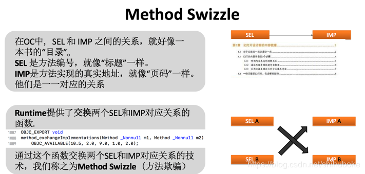

HOOK，中文译为“挂钩”或“钩子”。在iOS逆向中是指改变程序运行流程的一种技术。通过hook可以让别人的程序执行自己所写的代码。在逆向中经常使用这种技术。所以在学习过程中，我们重点要了解其原理，这样能够对恶意代码进行有效的防护。
Method Swizzle
利用OC的Runtime特性，动态改变SEL（方法编号）和IMP（方法实现）的对应关系，达到OC方法调用流程改变的目的。主要用于OC方法。
.
fishhook
它是Facebook提供的一个动态修改链接mach-O文件的工具。利用MachO文件加载原理，通过修改懒加载和非懒加载两个表的指针达到C函数HOOK的目的。
.
Cydia Substrate
Cydia Substrate 原名为 Mobile Substrate ，它的主要作用是针对OC方法、C函数以及函数地址进行HOOK操作。当然它并不是仅仅针对iOS而设计的，安卓一样可以用。官方地址：http://www.cydiasubstrate.com/
